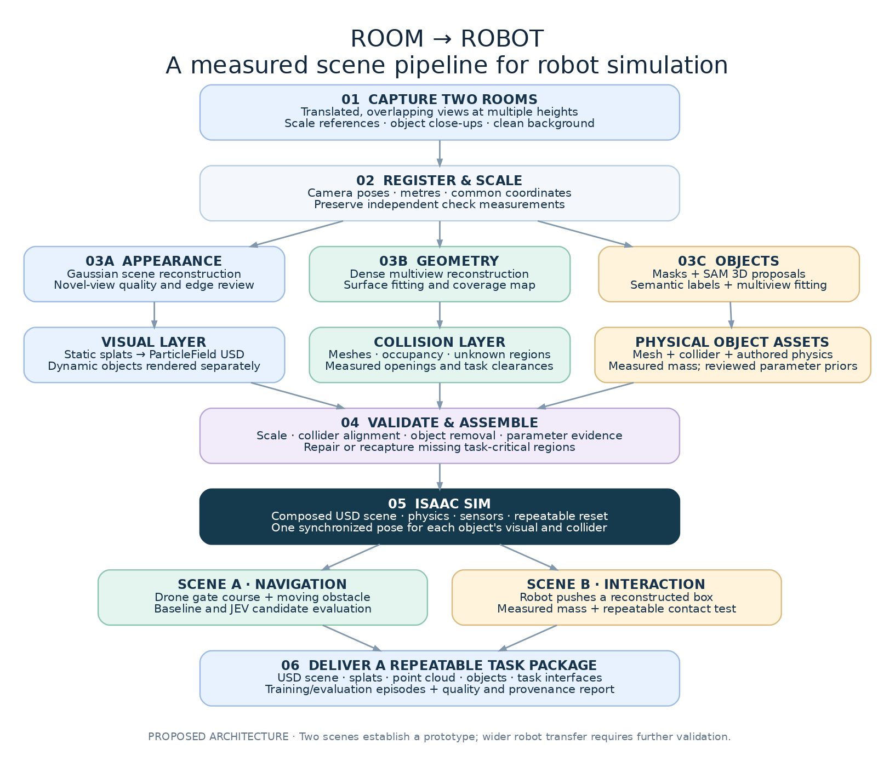

01 / CAPTURE
Recover the camera trajectory.
FFmpeg samples overlapping video frames. COLMAP, through Nerfstudio, estimates camera poses and registers the scene. Capture quality and coverage determine which surfaces can be recovered.
CAPTURE → RECONSTRUCTION → INTERACTION
Gaussian splats preserve captured appearance. Meshes make surfaces editable. Separate object assets support interaction. Real2Sim brings these representations into one inspectable workflow.

01 / CAPTURE
FFmpeg samples overlapping video frames. COLMAP, through Nerfstudio, estimates camera poses and registers the scene. Capture quality and coverage determine which surfaces can be recovered.
02 / APPEARANCE
Splatfacto optimizes anisotropic Gaussians, or the pipeline imports an existing Gaussian PLY. Splats retain appearance information; they do not establish collision geometry or physical scale.
03 / GEOMETRY
Configured Blender operations add or repair geometric surfaces. A separate Astra reviewer compares browser renders with source frames and proposes typed edits. Each candidate requires further visual review.
04 / OBJECTS
SAM 3D Objects uses an image and mask to infer an object. This adapter exports object Gaussians and layout metadata. Placement, duplicate removal, and background completion remain scene-specific review tasks.
05 / ASSEMBLY
Relative assets, explicit transforms, browser controls, and checksum inventories form a portable scene. The first office provides a walkable environment and a separate mesh reference. The pantry retains its original tour and snack-pickup viewer; the yellow room plays its original chair animation.
06 / VALIDATION
The mesh inspector exposes surfaces, bounds, counts, and provenance. Robot simulation additionally requires measured scale, validated colliders, physical parameters, and execution in the target simulator.
Astra runs separately from the main pipeline. Repairs and SAM 3D are optional configured stages. Supplied demonstration scenes are historical outputs; the full capture → Astra → Blender → SAM 3D chain has not been verified as one run. Browser interaction is kinematic, and scale remains unmeasured.
A planned experiment will compare video-model-assisted geometry or missing-view proposals with the captured baseline, measuring consistency, invented structure, compute, and physical validity.
Benefits, limitations, and evaluation plan ↗ · Run your own capture ↗